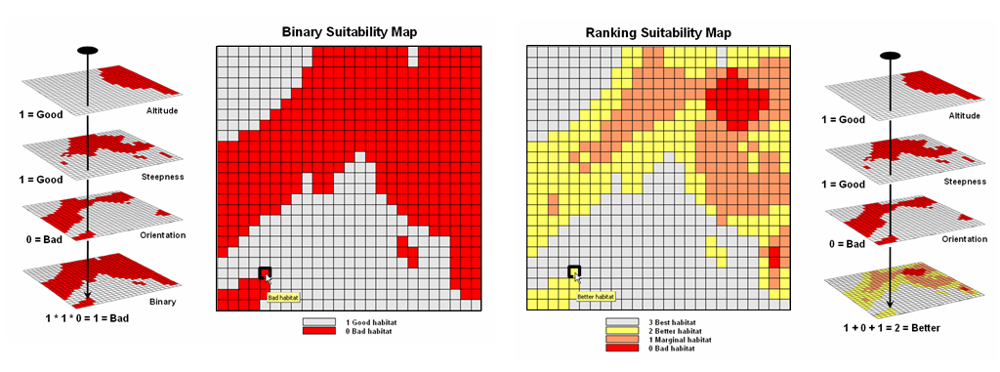
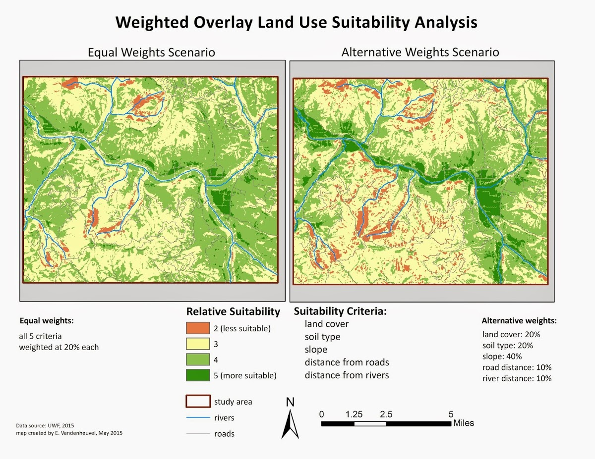
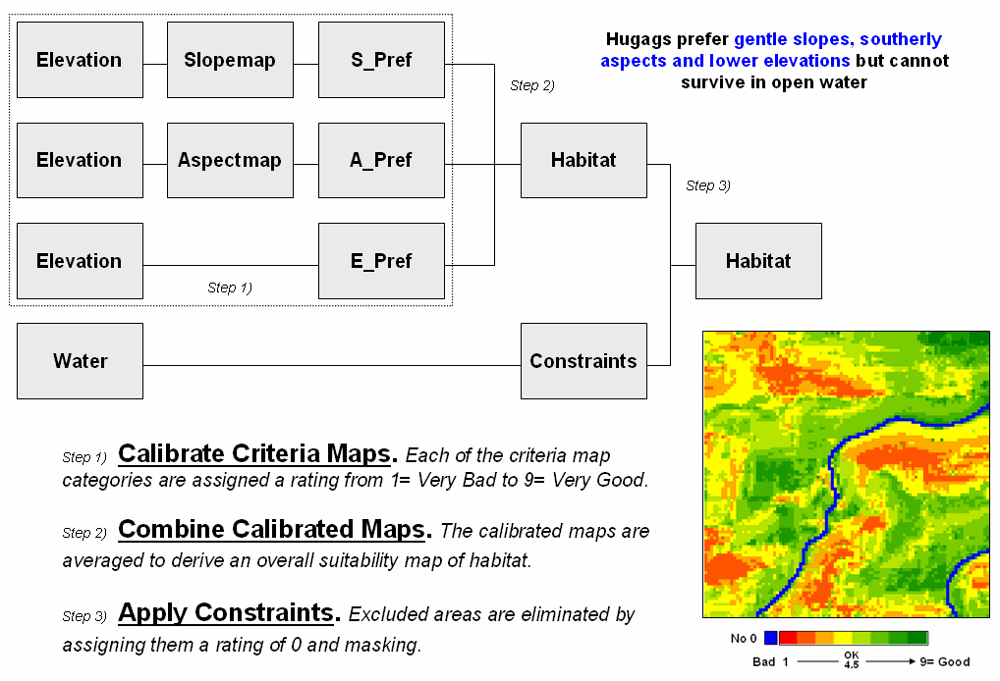
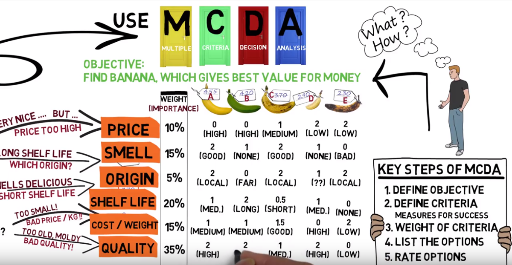
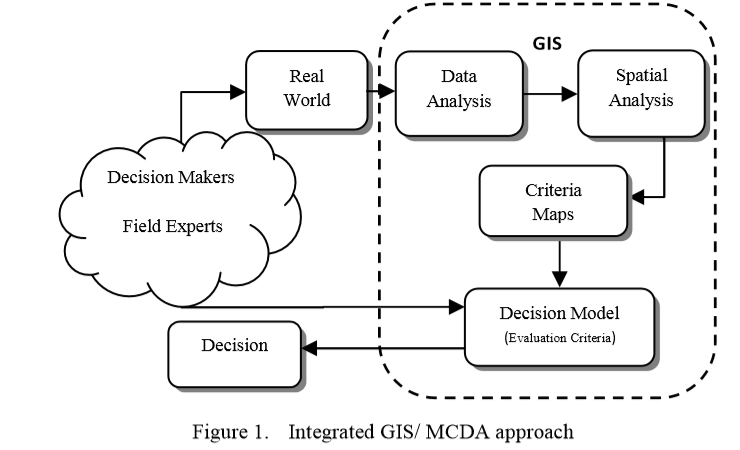

3 Análisis Multicriterio

Muchos de los problemas a los que nos enfrentamos hoy en día son complicados, con muchos intereses y soluciones contrapuestos. Sin embargo, los grupos tienen que ser capaces de trabajar juntos y llegar a compromisos para encontrar una solución que sea la más factible. Estos problemas suelen tener un carácter espacial o geográfico, por lo que el uso de SIG con distintos marcos o análisis puede ayudar en el proceso de toma de decisiones.
3.1 Criterios
3.1.1 Criterios Binarios

Los criterios del tipo binario se clasifican como buenos (1) o malos (0) Se determina multiplicando el mapa de tres preferencias binarias individuales, por lo que los valores 0 \times 0 \times 0 son iguales que 0 \times 1 \times 1 (AND).
La adición puede mostrar áreas en una escala que se ajustan a algunos de los criterios (O)
3.1.2 Criterios Ponderados
definir los criterios binarios en el método de análisis jerarquico

Los criterios no son en blanco y negro, y pueden estar en un gradiente. Cada entrada puede ponderarse según su importancia o su porcentaje de influencia. La ponderación es un porcentaje relativo, y la suma de los porcentajes de influencia debe ser igual al 100%.

3.2 Análisis de Decisiones Multicriterio (MCDA)
La toma de decisiones multicriterio es un enfoque utilizado para facilitar la consideración de múltiples criterios por parte de los responsables de la toma de decisiones. El MCDA se utiliza para evaluar y comparar lógicamente múltiples criterios, a menudo contradictorios, con el fin de tomar la mejor decisión posible. Resulta especialmente útil cuando hay un amplio abanico de partes interesadas con intereses, valores y objetivos contrapuestos.
Un MCDA puede utilizarse en cualquier campo para estudiar una amplia gama de problemas en los que puede haber múltiples soluciones favorables. Se ha utilizado en el ámbito de la atención sanitaria, como tratamientos de enfermedades o priorización, elección de un coche nuevo, actividades turísticas, opciones de procesamiento, transporte, uso de la energía, evaluación de riesgos, uso del suelo y selección de emplazamientos.

3.3 Análisis de Decisiones Multicriterio y los Sistemad de Información Geográfica (GIS-MCDA)
Muchos de los problemas a los que se enfrenta la gente son de naturaleza geográfica, por lo que resulta muy útil combinar los SIG con el MCDA. Los problemas espaciales suelen implicar un amplio conjunto de alternativas viables y criterios de evaluación múltiples, conflictivos e inconmensurables. Utilizar un SIG-MCDA puede es un proceso que transforma y combina datos geográficos y juicios de valor para resolver problemas espaciales. Para ello, tiene en cuenta los modelos de datos geográficos, la dimensión espacial de los criterios de evaluación y las alternativas de decisión a la hora de evaluar los criterios.
Algunos ejemplos de aplicaciones SIG-MCDA son el encaminamiento de vehículos, la selección de emplazamientos, la evaluación de escenarios, la adecuación de terrenos, la programación del transporte, la evaluación de impactos y la asignación de ubicaciones a diversos sectores.
3.3.1 Pasos del GIS-MCDA

Defina su problema, meta u objetivo. Intente comprender y definir el problema de la forma más exhaustiva posible.
Determinar los criterios y las limitaciones. Utilizar una combinación de opiniones de expertos e información de diversas fuentes. Puede obtenerse a partir de conversaciones con expertos de los campos pertinentes, el estudio de la bibliografía y el análisis de datos históricos.
Transformar los valores en una escala relativa. Esto permite comparar cada uno de los criterios y representar los juicios y conocimientos de los expertos con cifras significativas. Ponderar la importancia de cada criterio con respecto al objetivo, y entre sí.
Combinar, sintetizar y agregar las capas/criterios.
Analizar y validar los resultados.
3.4 Referencias
Multi-Criteria Decision Analysis and GIS - Siobhan Ryan and Ellis Nimick